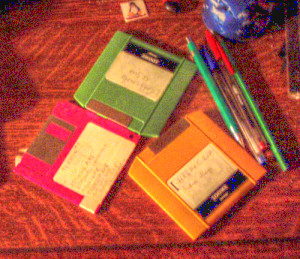

Figure 16.200. “Mantiuk 2006” tone mapping example

Original image

Filter applied with default settings, after changing image precision in GIMP to 32-bit floating point linear light.
This filter can be used to adapt an image, which may have a high dynamic range (HDR), for presentation using a low dynamic range. This operation constrains contrasts across multiple spatial frequencies, producing luminance within the range 0.0-1.0.
This tonemapping approach was originally presented by Rafał Mantiuk, Karol Myszkowski, Hans-Peter Seidel. “A Perceptual Framework for Contrast Processing of High Dynamic Range Images (revised and extended version)”. In: ACM Transactions on Applied Perception 3, 3 (2006), pp. 286-308.
![[Note]](images/note.png)
|
Note |
|---|---|
|
This filter is slow on larger images. For finding the best settings for your image you could make a small relevant selection first and save that as a preset before using that for the whole image. |
- Presets, Input Type, Clipping, Blending Options, Preview, Merge filter, Split view
-
Note These options are described in Section 8.1.2, “Colors Common Features”.
- Contrast
-
The amount of contrast compression.
- Saturation
-
Global color saturation factor.
- Detail
-
This parameter is not working and can be ignored. It will be removed in the future.